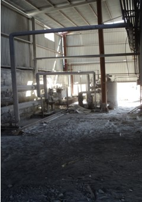
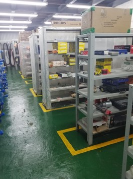
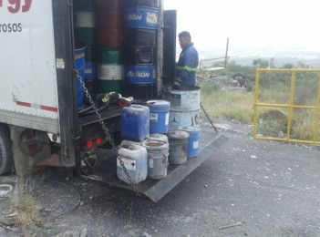
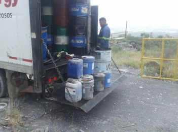
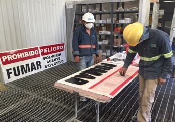
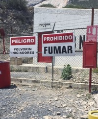

Perfil Ejecutivo
Especialista con más de 20 años de experiencia en la optimización de procesos industriales y administrativos. Experto en control de inventarios de alto impacto, gestión de residuos peligrosos y liderazgo en la implementación de sistemas ERP (Dynamics 365, Epicor).
Logros Clave
- Cero Diferencias: Éxito en inventarios cíclicos y anuales mediante análisis ABC.
- Optimización de Costos: Reducción de inventario mediante consignaciones y gestión de refacciones críticas.
- Transformación Digital: Liderazgo en 4 migraciones exitosas de sistemas ERP.
Skills Técnicos
MS Dynamics 365
Epicor
Metodología 5S
Excel Avanzado
Control Presupuestal
FoxPro / Clipper
Seguridad Industrial
Evidencia de Proyectos (Infraestructura)
Muestras visuales de la gestión y mejora de almacenes (2014 - 2021).


 



[Gestión de Polvorines 2021]
* Fotos documentadas en presentación ejecutiva.